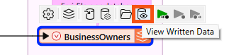
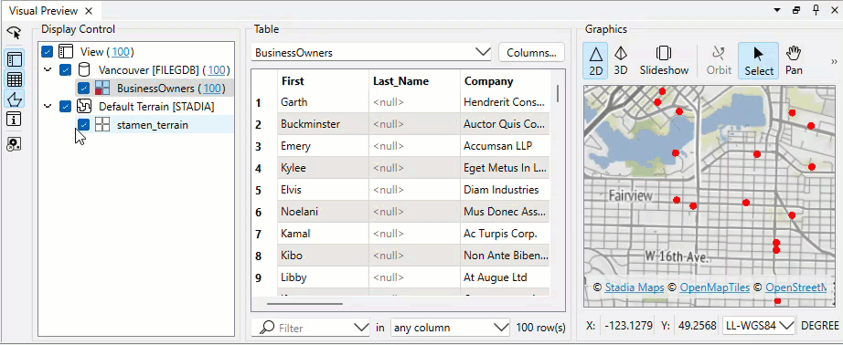

After completing this lesson, you’ll be able to:
Data inspection is an essential step in the data transformation process. It is crucial to inspect the output dataset to ensure the process's success.
Continuing with his workspace, Sven uses FME Workbench (2024.0 or later) to open the BusinessOwners written data in Visual Preview by selecting it and then clicking View Written Data.

Now that the BusinessOwners feature class (a geodatabase feature class is the equivalent of an FME feature type) in the Vancouver.gdb geodatabase is loaded into Visual Preview, Sven uses the Visual Preview toolbar to control the display. The Visual Preview will display the geometry of features in the Graphics View and the attributes in the Table View.
By default, Visual Preview automatically displays whichever object (feature type or transformer) is selected on the canvas. If Sven selects another object on the canvas, Visual Preview displays that data. Sven doesn't want that to happen because he'll lose the view of the BusinessOwners feature type, so he clicks the Toggle Automatic Inspect on Selection button on the left side of Visual Preview to turn it off.
Sven wants to change the color and size of the points shown in the Graphics View to make the points easier to see against the background map. He clicks the Display Control button to open Display Control, which lets him see a list of the layers being inspected.

Sven could check layers on and off here, but he decides to leave them both enabled.
Clicking on the grid icon next to BusinessOwners opens the Geometry Styles dialog. Here, Sven can change the display symbology and color of the points. Sven selects red, increases the point size to 8, and then turns the background map back on.

Sven toggles off Display Control and Table View to allow more space for the Graphics View.

Map tiles © Stadia Maps, © OpenMapTiles, © OpenStreetMap contributors, © Stamen Design
Sven clicks on Zoom Extents to see all of the data points.

Map tiles © Stadia Maps, © OpenMapTiles, © OpenStreetMap contributors, © Stamen Design
Visual Preview and the stand-alone application Data Inspector are not a Geographic Information System; they can not be used to create polished cartographic output, conduct interactive spatial analysis, or edit data. The purpose of Visual Preview and Data Inspector is simply to inspect data.
⭐ New for FME 2024.2: the Zoom Selected button is now a toggle. When toggled on, the Graphics view will zoom to the the feature currently selected in Table View or the Feature Information Window. Changing the selected feature will zoom the Graphics view to the new feature. Additionally, we've changed the zoom amount so a bit more context around the feature is displayed.
Use Pan and Zoom to find the northernmost public art installation. Use Select to select it.
Use the Table View or Feature Information to take note of the Title of the installation.

Map tiles © Stadia Maps, © OpenMapTiles, © OpenStreetMap contributors, © Stamen Design